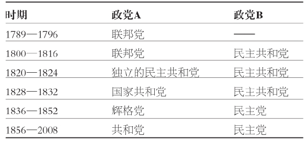
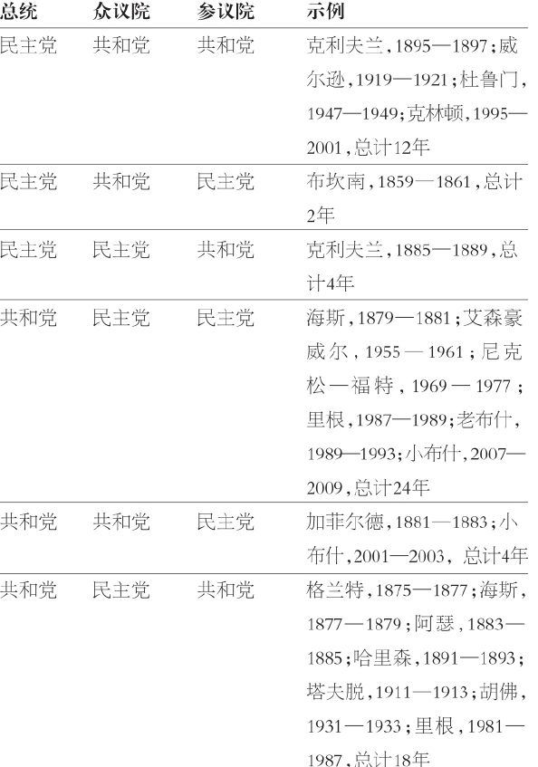
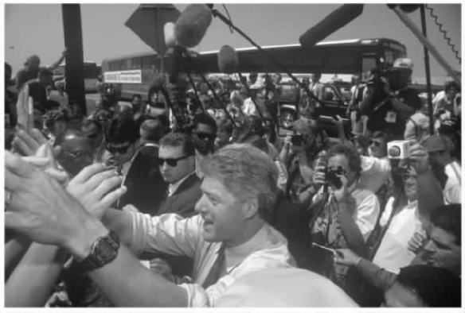
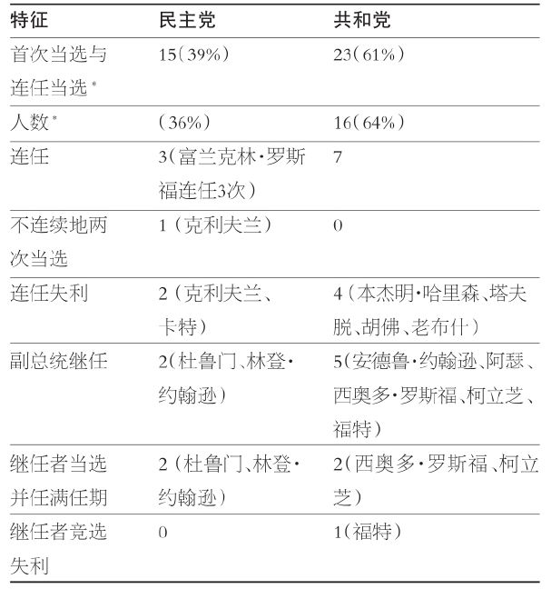
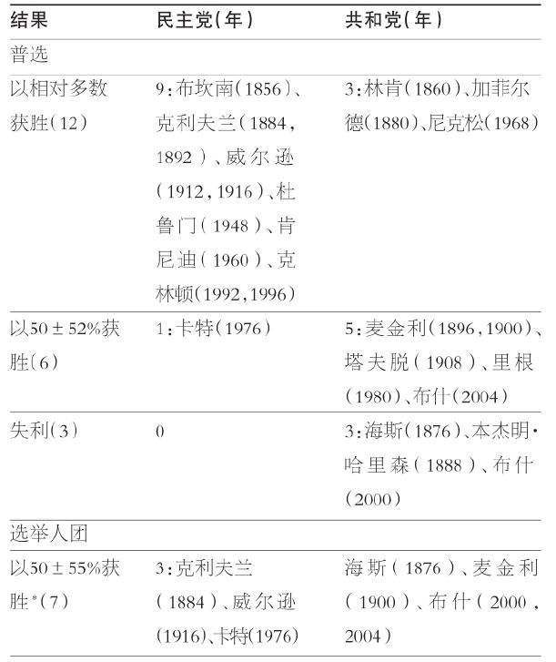
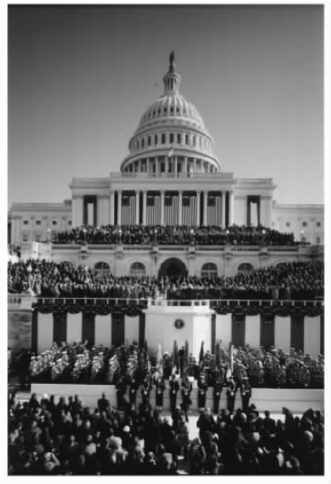

创新即做与众不同之事。开国元勋们创造了一种确认行政领导权效力的崭新方式。他们的方案不仅设定了一种从未尝试过的选举体系，而且也有助于塑造机遇，确定总统权力的疆界。人们对于那些顶着“总统”头衔的人往往寄予很多期待，但是他们的当选为满足这些要求提供了非常不同的政治资本。并且，有一些总统——20世纪担任总统职务者的四分之一——在首次任职时并非通过选举。
这个方案运转良好吗？对此，在肇始时刻，没有人百分之百地有把握；事实上，除了接受乔治·华盛顿作为首任总统之外，没有人确切地预料到下一步将会发生什么。这是多么惊心动魄的故事啊！今天的许多人都认为，选举人团运转的神秘之处，可能对这个制度的延续起到了作用。将改革者的热情放到一边，我们必须钦佩这种卓越才智，这种才智塑造了一种与快速变化极不相容的连锁体系。对某一部分的修修补补（如任期、选举人的遴选、计算选举人票、替代性的普选等）充满着难以预料的后果。
何妨一试。选择一种对总统选举方式的最中意变革。然后，对你的变革效果进行一个现实的检验，全盘地考虑这个体系。本章或许有助于分析这个问题。下面的内容基本上会显示，宪法构造和历史现实都支持去维系开国元勋们设计的独特方法。
在乔治·华盛顿于两个任期内的实际加冕之后，最初规划所具有的政治敏锐并未能阻止选举中异常情况的发生。要做的是纠偏而非改革。例如，1796年，在华盛顿退休之后的第一次选举中，约翰·亚当斯和托马斯·杰斐逊都是情理之中的选择；那时，亚当斯担任副总统，杰斐逊则拥有作为《独立宣言》主要撰写人以及第一任国务卿的全国威望。亚当斯险胜。因为得票名列第二，杰斐逊便在亚当斯任内担任副总统。如果将其放在当代背景下，这近似于艾尔·戈尔和随后的约翰·克里在2000年和2004年选举后担任小布什的副总统。
1800年，还是这两位候选人——亚当斯和杰斐逊——参加竞选，这次他们都得到国会党团会议（congressional caucus）的支持：联邦党人支持亚当斯，民主共和党人支持杰斐逊。随后得到的结果是一个平局，并非在亚当斯与杰斐逊之间，而是杰斐逊与其竞选搭档阿龙·伯尔之间的平局。这个异常情况必须予以纠正，于是通过了第十二条修正案。
宪法规定，总统选举人通过由各州立法机构决定的方法而任命。分配给每个州的选举人数目，设定为众议员数目加上两个参议员席位。选举人们在各州相聚并对两个候选人进行投票。随后，他们的投票结果被送到参议院议长处进行计算。获得多数选票的人当选总统。最初，如果两个候选人获得相同的多数（如1800年杰斐逊与伯尔的得票数），众议院将进行选举，每州一票。如果没有候选人获得选举人票多数，众议院将从得票最多的前五名候选人中进行选举。在这两种情形之下，获得选举人票第二多的候选人便将担任副总统，如果两个或更多的人获得相同数量的选票，参议院将作出选择。
以任何标准来衡量，这种选举方法都不寻常。它忽略了政党发展的可能性。它允许普选选举人，但并不要求必须如此。这样，在普选的民主方法之外，它也允许贵族式的任命选举人的方法。并且，副总统的选举是一件无关政党的事——实质上无论是谁，只要得票第二便可任职，就像杰斐逊担任亚当斯的副总统一样。
这个体系是如何开始运转的呢？1789年第一次选举中，华盛顿囊括所有的选举人票。因为他没有对手，如何任命选举人的问题便无关紧要。尽管如此，选举人的任命方式在各州中依旧各不相同。一些州的立法机构通过联合会议任命或共同任命选举人；其他的州则规定了变化的形式，即通过普选以及由州立法机构选定。1789年，有三个州未参加选举人投票：纽约州是因为其参众两院未就方法达成共识，北卡罗来纳州和罗得岛州是因为那时尚未批准联邦宪法。华盛顿获得了69张选举人票。选举人们要投两次票，虽然华盛顿没有明确的反对者，对于第二个选择，则存在不同的观点。约翰·亚当斯得到最多的第二轮选举票数。
在某个方面，第一名和第二名的问题必定会产生麻烦。如果两个人获得同样多的选票该怎么办？宪法规定，如果这样，其竞争将移到众议院。但是如果这种情况经常发生，恰如一些开国元勋们所认为的，分权原则就可能会遭到颠覆，因为实际上是由国会在作出选择。进一步来说，例如杰斐逊担任亚当斯的副总统，一个总统的对手可能会在这个总统死亡或辞职之后接掌权力。
没过多久，这些问题便得到应对。1800年，副总统托马斯·杰斐逊是总统候选人。阿龙·伯尔想必是希望竞选副总统。两人都得到73张选举人票。宪法明确规定，选举人应“每人投票选举二人”，但并未规定分别投票给总统和副总统。在这些情形下，众议院应按要求“投票选举其中一人为总统”（第二条第一款）。作为参议院主席，杰斐逊宣布结果：平局。
如宪法第二条之规定，众议院中的投票以州为单位，无论有多少众议员，各州只有一个投票权。在第一轮投票中，杰斐逊赢得8个州的支持，伯尔赢得6个州的支持，两个州的代表发生意见分歧而并未投票。要赢得选举必须获得9个州的支持。总共通过36轮投票和大量的政治妥协，最终杰斐逊获得第九个州的支持。
1803年，国会通过一条宪法修正案，要求选举人“投票选举总统和副总统”，从而区分了两个职位。这条修正案很快被批准为第十二条修正案，并运用于1804年的总统大选。选举人团的选举方法并未成为其他宪法修正案的主题。然而，伴随时间推移，提名和选举程序也发生了演变，从而与早期的竞争大不相同。
1800年选举显示出的歧义问题只是需要解决的许多问题之一。谁将是候选人？政党是否会出现？总统和副总统候选人能够作为一个团队进行竞选吗？如何遴选选举人？对这些问题进行解答显示出启动改革所面临的复杂性。制度开始变得日益相互联系；鉴于团队获胜的利害攸关，政党对候选人遴选怀有浓厚的兴趣。
缔造美利坚合众国的各种重大事件必定会诞生出可能的总统候选人。乔治·华盛顿的事例已经在前文中讨论过。然而，还有其他大量的著名人物积极地投入到公共事务中，包括约翰·亚当斯、托马斯·杰斐逊、亚历山大·汉密尔顿、阿龙·伯尔、托马斯·平克尼、约翰·杰伊、詹姆斯·麦迪逊和乔治·克林顿等，这些人不过是其中的一小部分。本杰明·富兰克林也是一位卓越的人物，但是在建国之时他已年迈，并在一年之后离世。太遗憾了。倘若由富兰克林担任总统，本来可能使政府、政治和社会生活更具生气与活力。读者可以通过阅读费城一代的任何一本传记来理解个中缘由。
国会党团会议即具有相似思想的参议员和众议员举行的会议，它在早期的几次选举中作为提名总统候选人的途径发展而来。国会党团会议的出现被一些人视为对制宪会议达成的机构分立原则的损害。因为，如果总统们首先必须由国会议员提名，他们难道不会觉得对议员们有所亏欠？然而事实上，这一时期（1804——1824）的党团会议，选出的基本上都是众望所归的（即使并不总是必然的）人选。1812年和1820年两次总统选举中，民主共和党人提名了时任总统麦迪逊和门罗。这段时期，联邦党人日益没落，到1820年之前已经变得无足轻重。
从1824年至1832年，对总统提名和政党发展而言，这段时期事后看来非常关键。1824年，国会党团会议体系成为一个议题。民主共和党人中一小部分人召开党团会议，提名财政部长威廉·克劳福德为总统候选人。其他的地区候选人并不接受这个决定，并在各自州内得到提名。结果，选民和选举人面临四个选择：来自田纳西州的安德鲁·杰克逊；来自马萨诸塞州的约翰·昆西·亚当斯；来自佐治亚州、由小型党团会议提名的威廉·克劳福德；以及来自肯塔基州的亨利·克莱。
杰克逊赢得普选和选举人投票的相对多数，但是在两项投票中得票都未过半。因此，按照第十二条修正案，选择权落到众议院手中，再一次由各州投票，但这次选择对象是得票最多的三个人，即杰克逊、亚当斯和克劳福德。得票名列第四的克莱，转而支持亚当斯，因此亚当斯在第一轮投票中便得到获胜需要的多数，即13个州的支持。可以理解，杰克逊被激怒了。作为回报，亚当斯总统任命克莱为国务卿。有意思的是，历史上两次最有争议的选举，1824年和2000年，都涉及前总统的儿子，即约翰·昆西·亚当斯和小布什。
国会党团会议作为候选人提名组织的短暂时代已经结束。这种提名方式终结的大环境表明，必须找到一种更受欢迎的总统候选人提名方式。到1824年，已经明晰起来的是，公众并不支持国会议员控制他们对总统的选择权。1824年选举也标志着开国元勋一代的结束，以及联邦党人作为政治力量的逝去。此外，因为未能团结起来支持同一个候选人，民主共和党人也衰落了。
1828年，安德鲁·杰克逊再一次得到田纳西州议会提名，并成为新的民主党的共推候选人。那些支持约翰·昆西·亚当斯总统连任的人自称为国家共和党。1828年选举结果并无争议；杰克逊以大于2比1的优势赢得选举人团选举。
如果总统提名来自华盛顿特区之外，某种形式的政党大会就在意料之中了。1831年9月，两党之外的第三党——反共济会党首次召开了这种秘密会议。国家共和党随后于1831年12月召开了一次全国大会，并且制定了第一份政党纲领；民主党人于1832年5月召开了首次会议。这种新的提名方式，尽管伴随着时间发展而拥有了不同的功能，一直延续了下来。从1831年至今，每一个主要的政党候选人都是通过全国代表大会来获得正式提名的。
同样可以预见的是，人们的注意力将最终转到提名大会的代表选择上来。那些希望影响总统或者期望获得总统回报的人们，试图首先控制各州代表。当政党实力增强，各州和地方的头面人物便开始与候选人组织就人事任命和政策议题讨价还价。
在有些情形下，磋商一直持续到代表大会召开，争议主要围绕着代表席次、施政纲领撰写和总统候选人选择等。在总统预选产生之前，往往要通过多轮投票来提名总统和副总统候选人，特别是民主党，因为它要求候选人需要以三分之二多数来赢得提名。从1832年到1924年的24次民主党代表大会中，有13次经过了多于一轮的投票。7次大会经过了超出10轮的投票，4次大会超过40轮投票（最高纪录是1924年的103轮）。1936年，民主党放弃了三分之二多数规则，自那以后，只有一次民主党代表大会经过多轮投票（1952年）。
共和党在提名总统候选人时自始至终规定简单多数规则。从1856年建党到1920年的17次代表大会中，有8次大会经过多轮投票。只有一次代表大会投票超过10轮，即1880年的36轮投票。随后，除1940年和1948年两次大会之外，共和党人全部通过一轮投票完成候选人提名。在失去挑选候选人的戏剧情景之后，代表大会一方面仍然保留着其他的目的，特别是团结全党展开全面的竞选；另一方面，它对公众的吸引力也降低了。
在现代，总统初选制度的发展与完善是全国大会上只需单轮投票的主要原因。1901年，为遴选全国代表大会代表，佛罗里达州成为实施初选制度的第一个州。随后，威斯康星州于1905年，宾夕法尼亚州于1906年，俄勒冈州于1910年，先后实施了这一制度。到1912年全国代表大会时，已经有12个州采取了某种形式的初选（或者选举代表，或者允许选民在不同候选人之间表达偏好，或者两者兼而用之），到1916年，又有8个州也采用这一方式。在1920年代和1930年代，人们对于初选制度的热情开始衰退。有几个州相继废止了相关法律规定。大多数政党领导人不再热衷于初选制度，因为初选用地方和各州领导对代表席位的控制取代了选民的选择。在1930年代，伴随着罗斯福总统主政，公众的注意力集中于大萧条和第二次世界大战。1920年的初选次数为20次，1940年只有14次，在两党内部，这些初选几乎都没有受到认真对待。
第二次世界大战结束之后，总统初选作为候选人提名的普遍方式得到复兴。如果候选人能够获得足够的代表支持，即使得不到政党领导人的支持，他们也能赢得胜利。交通和通讯条件的改善，使有希望的候选人能够实施全国范围的竞选，在全国大会之前预先确立领先优势。
1952年，对民主与共和两党而言，初选都非常重要。来自田纳西州的参议员埃斯蒂斯·基福弗通过初选竞选挑战民主党领导人。他在1952年赢得15场竞争中的12场，并使全国代表大会进行了3轮投票（伊利诺伊州州长阿德莱·史蒂文森以不足2%的初选票获胜）。共和党方面，德怀特·艾森豪威尔将军成功地挑战了来自俄亥俄州的罗伯特·塔夫脱的候选资格。艾森豪威尔赢得了他参加的9场竞争中的5场。
从那时起，人们就期望候选人参加初选并在初选中确立领先优势，即使大多数代表是通过其他方式来参加初选的（大多通过各州政党党团会议）。从1952年到1964年，总统初选的场数增长幅度不大（在15场到19场之间变动）。但是，获得最多初选票的候选人每次都会获得提名。
民主党的1968年提名事后看来是巩固初选之重要性的关键事件。总统林登·约翰逊决定放弃连任，从而为提名提供了一次公开竞争机会。主要的候选人是来自明尼苏达州的参议员尤金·麦卡锡和来自纽约州的罗伯特·肯尼迪。在肯尼迪参选之前，麦卡锡就赢得了早期的初选。肯尼迪赢得了关键的加利福尼亚州初选，但是就在获胜的当晚被人暗杀。副总统休伯特·汉弗莱未参加初选，只能获得“另选他人”（write-in）的选票。当时的主要议题是越南战争，麦卡锡和肯尼迪反对这场战争，汉弗莱则代表着约翰逊政府的一贯态度。
这场全国代表大会可以说是历史上最为热闹的一场。汉弗莱是政党领导人选定的，但是未经初选的检验。刚刚浮现的热门人选肯尼迪已经身亡。反战活跃分子孤注一掷。汉弗莱获得提名后，代表大会所在城市芝加哥发生了若干起骚乱。代表大会后的改革委员会聚焦于确保建立一个更为开放的程序，以更好地代表所有群体。
这些变化鼓励着其他更多的州采取总统初选制度。采纳初选制的州数目在1976年时为25个左右，在1980年代达到35个左右，到了1990年代有将近40个，世纪之交已经超过40个。
到20世纪末，提名机制已经在总统初选制度中确立下来。从1972年到2004年，每个党的领先者都得到提名。全国代表大会成为已经选出的候选人的批准机构。此外，各州开始让初选“前期吃重”（front-loading），即将初选制度在日程上前移。于是，提名竞选更早地得以展开，领先者从最初阶段的初选中便脱颖而出，全面的大选造势较过去提前了几个月。不难理解，这些变化增加了竞选总统的成本，并且提出了竞选筹款改革的要求。
“初选竞选与电视这样的可视媒介被证明是完美搭配。” [26] 通讯手段的急剧发展对提名过程具有深刻的影响。恰如赛马，竞选也会吸引人们兴致勃勃地去关注。竞选在公开场合举行，赌注可观，并设有终点线——选举日。但是，电视、网络和其他的通讯方式也以大幅攀升的金钱代价和组织化努力而被纳入个人竞选之中。
从历史角度看，总统候选人提名经历了几个阶段的演变：（1）选择众所期待的国之栋梁；（2）国会党团会议背书；（3）全国政党代表大会；（4）由初选制度作为补充的全国代表大会；（5）确立领先者的初选制度；以及（6）决定最终选择的初选制度。这些阶段演变反映出把公众纳入其中的意图，主要是回应普遍的民主化进程，例如政党的出现、选举权的扩大、各州选举人制度的改革以及大众媒体的成长。
詹姆斯·麦迪逊在《联邦党人文集》第十篇中针对“党争危害”提出警告，并强调控制其影响的必要性。麦迪逊将宗派（faction）定义为“全体公民中的多数或少数，团结在一起，被某种共同情感或利益所驱使，反对其他公民的权利，或者反对社会的永久的和集体利益” [27] 。他相信开国元勋们已经发现了规制宗派的方案：跨越“更多种类的宗派和利益”的代议制政府。简言之，即缔造共和制度，拓展其涵盖范围。
在《联邦党人文集》第五十一篇中，麦迪逊通过对控制之必要性的类似承认，证明了分权和制衡的合理性。“野心必须用野心来对抗……毫无疑问，依靠人民是对政府的主要控制；但是经验教导人们，必须有辅助性的预防措施。” [28] 因此，恰是开国元勋们才使得宗派控制整个政府体系实际上成为不可能之事，不管这里的宗派是一个政党，还是一个利益团体。
然而，宪法方案中并未禁止宗派或者政党。麦迪逊阐明，消除共同情感冲动或利益冲动产生的原因，这是错误的或者不可能的。自由社会的繁荣系于民众组织起来维护共同利益的权利。因此，这是一个政党何时 以及如何 发展的问题，而不是是否 发展的问题。表3.1显示了出现过的主要政党，以赢得总统选举为存在标志。如表所示，从1856年至今，竞争主要发生在民主党和共和党之间。一路走来，小党也是重要要素，但是1856年后，从未有过小党获得持续的全国竞争力。
政党是如何发展的？它给总统带来了哪些不同之处？要对这些问题予以回应，指出麦迪逊及其同仁设计了有效的控制机制意义重大。联邦主义、权力分立、选举分离、制衡原则、两院制、不同的任职期限以及选举人团等决定着政党如何发挥功能。这种设计并不限制政党或宗派的出现，但是它创造了使这些政党各安其职的环境。
表3.1 角逐总统大位的主要政党，1789—2008

来源：作者汇编自Harold W.Stanley and Richard G.Niemi，Vital Statistics on American Politics，3rd ed.（Washington，DC：Congressional Quarterly Press，1992），111-15.
这个宪政结构将政党塑造为松散的、以选举为基础的、基本上无意识形态的、利益驱动的组织，党员身份基于自我认同。更有纲领性和意识形态导向的第三政党都好景不长。的确，共和党倾向于更为保守，不大可能推动政府来解决问题，并代表商业利益。民主党则倾向于更为自由，更有可能支持政府发挥较大功能，并代表劳工的利益。但是，这两顶“帐篷”都很大，并存在重大的区域差异。
人们一直都说，银行被抢劫恰是因为它是有钱的地方。同样地，政党得以组织正因为那里存在着选举。并且，根据宪法的意图和允许，选举无处不在。对总统而言，最为重要的是那些争夺总统职位以及竞争众议院与参议院席位的选举。从多个方面而言，这些都是州 选举，受制于那个层面的规范。相应地，政党需要适应州的法律，这些法律规定着它们如何组织、如何遴选候选人、如何实施选举以及如何募集和支出资金。
任职期限长短影响着政党的组织和运转。如果总统、众议员和参议员都拥有共同的四年任期，可以想象，政党就可以协调竞选信息，并提出治理的领导战略。然而，总统选举之时，众议员两年之后便会重选；只有三分之一的参议员将任职六年，除非总统获得连任，否则这部分参议员的任期将比总统多两年。
开国元勋们通过错开选举来强化分权。与议会制体系截然不同，美国政党组织起来是为了赢得三大机构，即众议院、参议院以及总统的选举。每个党都在众议院和参议院中设立竞选委员会，来募集资金并协调选举活动。总统候选人也有自己的竞选委员会，全国性的政党委员会努力使这些委员会和谐共进。政党结构的这种内部分立是由三种类型的全国选举（总统、众议院和参议院）之间的种种区别所塑造的。每种选举的竞选各不相同，这体现在募款、议程、利害关系（不同的任期）、适用法规、候选人类型以及与各州和地方政党的关系等方面。所有这些组织之间的协调问题竟是通过无人负责来避免的！
将全国性的选举错开所带来的一个清晰且完全是宪法性的影响是，允许两个政党都取得胜利。例如，1996年民主党人克林顿总统轻而易举地获得连任，共和党人则继续把持着在众议院和参议院的多数席位。这种政党分裂（split-party）的结果使宣布授权变得困难起来。看来，选民们经常采纳棒球选手约吉·贝拉的建议：“行经三岔路口，请一往直前即可！”
如表3.2所显示，在两个政党和三种选举之间，共有六种分裂的可能。自1856年现存两党制成型以来，所有六种情形都曾经在现实中出现过。在19世纪的下半叶，政党分裂的结果非常普遍，发生在这个时期的将近50%的时间里。在20世纪的上半叶，一党主政白宫，一党占据国会多数的情况比较罕见。然而，在第二次世界大战之后，政党分裂的政府又成为普遍形式。这段时期，11位总统中的8位曾经面对着国会一院或者两院中的反对党多数。引人注目的是，在1981至1993年的整整12年中，不同政党分别控制着总统职位和国会，并且，这种情况占据了从1969至2009年期间75%的时间。
对政党而言，选举错开和任期分割的影响甚为广泛。在总统选举中被击败的政党可能掌控众议院和/或参议院的多数席位。在这种情况下，总统在推行一个项目时，必须寻求跨党支持。面对反对党控制国会这种情形的总统还发现，针对反对党的太多妥协会导致来自本党支持的流失。有时，你即使赢了选举，甚至也不能算赢。
显而易见的是，总统希望他们的政党能够在参众两院占据多数席位。然而，这种有利形势并不必然保证忠诚。任期的分割（2年、4年和6年）意味着所有的众议员和三分之一的参议员将在两年之内面临选举。国会山的强烈动机是向总统的各种需要注入以选区为导向的视角。各州利益和地方利益经常压倒政党忠诚。
总统选举和国会选举都是按照日程表，而不是根据危机、信任投票甚至是当事人死亡展开的。因此，在某次选举中，完全可能只有相对极少的议题；1988年选举恰是这种情形。根据法律，总统选举和国会选举在11月第一个周一过后的首个周二举行。有一个确定的选举日期，这在组织动员、候选人活动和资金支出方面决定着竞选活动。日程上的其他重要日期包括，总统初选、两党全国代表大会以及候选人辩论。
表3.2 政党分裂格局，1856——2009（附示例）

来源：作者汇编数据自Norman J.Ornstein et al.，Vital Statistics on Congress，2001-2002（Washington，DC：AEI Press，2002），56-58.
民意调查活动持续地展开，经常主导着媒体竞选的报道。在第二次世界大战之后，只有一家民意调查组织，即盖洛普民意测验。时至今日，已经有若干家相关机构。大多数主要媒体——全国性的报纸和杂志、网络、有线电视——都会发起民意调查，州和地方的媒体也会发起相应层面的民意调查。大学和研究机构同样会进行调查和民意测验。候选人机构和政党也开展自身的民意调查活动。
公共舆论的此类测量大多针对候选人展开。目前谁领先？领先多少？测试也会针对具体议题，并有可能影响竞选的言辞和辩论。选举日通常会决定谁将成为总统。一个例外是2000年的总统选举；当时佛罗里达州的重新计票将最终结果的公布延迟到12月中旬。直到最近，竞选活动还是在选举日停止，并且由新团队主导的第一阶段的治理工作会随即开始。政治顾问会转向其他的客户，民意调查者减少测验。但是现在，所有这些都发生了急剧的变化。
现在，持久的竞选已经成为治理的显著特征。各种民意调查会常规性地针对主要议题展开，总统的工作满意度会经常性地得到检视。在乔治·W.布什总统任职的前三年中，他总共受到了630次关于工作表现的评价；也就是一年210次，每月将近18次。小布什每周面临评估的次数与杜鲁门总统一年面临的次数相同。 [29]
关于公众对总统工作表现的看法的测试次数呈现指数增长趋势，怎么解释呢？民意测验技术的改进是部分答案。与过去相比，在当今时代，获得、分析和发布民意测验结果变得更加容易。为什么这些结果会引起兴趣呢？毕竟，总统已经身处固定的、四年的任期中。政党分裂的政府、更为公开的政策过程，以及近年的“微弱优势”（narrow-margin）政治，这些都有助于解释为什么会有更多的民意测验，为什么我们会关注结果。每个原因都值得一说。
总统与反对党占多数席位的国会山一道工作，这引发了人们对其在两党之间所处政治地位的兴趣。工作满意度好评被视为公众支持的证据，至少是民意测验之时的支持，因此也是总统的潜在优势。国会成员，特别是那些来自总统赢得选举的各州和选区的成员，会理所当然地关心这些评价。
与这个变化相关的，是使政策辩论日益向公众开放的趋势。实质上，现在的所有主要立法都已经成为电视广告、谈话类节目和有线新闻台讨论热点、互联网博客分析重点，有时还是公众示威的主题。因此，正如存在着候选人 赛局，也存在着政策 赛局。一般的看法是，判断谁将获胜的方法便是开展民意测验。
“微弱优势”政治推动了这些变化。2004年总统选举是1988年以来获胜者首次囊括普选票多数的大选，但也只是51%。从1995年到2007年的12年中，众议院和参议院多数席位一直是微弱优弱，这就为跨党联合提供了激励因素。同样，由公众支持来衡量的总统政治地位，是在势均力敌的国会中实施有效领导的影响因素。
这些民调、政策和政治方面的发展趋势，鼓励总统活跃且持续地展开竞选。诚如一句短语所言，当代总统“公开了自己”（go public） [30] 。现在，总统在宣布重大提案之后走向街头巷尾，是很平常的事。在某些情况下，如2005年小布什总统提出社会保障改革时，甚至会进行正式的造势。一言以蔽之，现代总统要接受持续地评估，他们将其视为工作的一部分，从而影响这些评价来维持政治地位。
总统竞选中的获胜者罗列在本书附录之中。本节的讨论将聚焦于1856年现代两党制形成之后的时期。表3.3显示出总统大选获胜的一些基本情况。在1856到2004年之间，共有38次选举和25位总统当选（未计入安德鲁·约翰逊、切斯特·阿瑟和杰拉尔德·福特，他们担任总统却未经选举）。在本时期内，共和党人赢得38次选举中的61%。民主党人只在一段时期，即1932年到1952年之间连续占据着总统职位，其中富兰克林·罗斯福当选4次加上杜鲁门当选1次。共和党人赢得1856年到1928年之间74%的选举，并赢得1952年到2004年之间64%的选举。

图3.1 克林顿总统在为竞选和政策造势方面表现出色。
从1856年到2004年，只有3位民主党人（威尔逊、富兰克林·罗斯福和克林顿）成功连任（富兰克林·罗斯福连任三次），尽管克利夫兰担任过两个不连续的任期。7位共和党人（林肯、格兰特、麦金利、艾森豪威尔、尼克松、里根以及小布什）得到连任。在这些连任的总统当中，林肯、麦金利、富兰克林·罗斯福和尼克松并未完成任期（富兰克林·罗斯福未完成第四任期）。如表3.3所显示，2位民主党总统和4位共和党总统在寻求连任时折戟（其中之一克利夫兰随后当选第二任期）。
总统如何当选因人而异，这种差异对总统在华盛顿的政治影响力具有深刻影响。政党分裂之下政府的性质和引发的结果已经在前面讨论过（见表3.2）。表3.4罗列出1856年后的若干场选举，其中的获胜者在普选或选举人团或者两者中都未获得决定性的胜利。以下几点值得注意：
表3.3 总统选举获胜，1856——2004（38次选举和连任选举）

* 不包括从未参加总统选举的安德鲁·约翰逊、阿瑟和福特。
来源：作者汇编数据自Michael Nelson，ed.，Guide to the Presidency，2nd ed.（Washington，DC：Congressional Quarterly Press，1996），1667-69.
对于理解分权体系中总统职务的政治地位和所面临的政策挑战，这些数字非常关键。伴随着以普选票和选举人票的具体组合来衡量的不同的公众支持，再辅以国会选举的独立结果，总统入主或再次入主白宫。如表所示，较多的总统在势均力敌的选战中获胜并且/或者在某个时段内面对着由反对党控制的国会。对许多总统而言，胜选赋予其一个行使权力的地点——白宫，但是并不能在一开始为总统带来什么政治资本。毫无疑问，合法地入主总统办公室是对职位和体制地位的确认。但是，值得注意的是，从1856年到2004年，有超过一半的总统实质上必须从就职仪式开始加强自身的地位。如此行事的动机一目了然，因为不管是否拥有政治资源来进行统治（rule），他们都需要对治理（governing）承担责任。事实似乎是这样的：当选总统只是施展权力的第一步。
如表3.3所示，7位副总统继其所服务的总统之后成为总统。其中6次是因为在任总统死亡，1次是因为辞职（尼克松）。这种情况总共占全部总统的16%。7位继任总统中的5位试图通过选举获得连任，4位成功（民主党中的杜鲁门和林登·约翰逊；共和党中的西奥多·罗斯福和柯立芝），一位功败垂成（福特）。继任的各位副总统只任职35年多一点（1789年到2005年间总时长的16%），自1901年以来共任职28年（这段时期总时长的27%）。
表3.4 势均力敌的总统选举，1856——2004

* 这7场选举，是本时期内最为势均力敌的，代表着他们获得的普选和选举人团支持很有限。有两场，即海斯和小布什的竞选，总统在普选中失利。
来源：作者汇编数据自Harold W.Stanley and Richard G.Niemi，Vital Statis－tics on American Politics，3rd ed.（Washington，DC：Congressional Quarterly Press，1992），113-15；近年选举的互联网数据。
的确，副总统随总统一起当选，但是对他们的选择一般更像是任命。总统候选人挑选竞选伙伴，基本上都是看这个选择对自己的选举有多大帮助、如果当选对自己履行总统职责又有多大贡献。副总统一般不能预测是否或何时将入驻椭圆形办公室。他们不能以任何严肃的方式计划此事。他们从与总统的亲近和完成总统分配的任务中获得收益。近年来的总统，至少从卡特到小布什，都曾经给副总统分配重要职责。从1977年到2005年这段时间内，3位副总统——1984年的蒙代尔、1988年的老布什和2000年的戈尔——曾经竞选总统。只有老布什成功当选。

图3.2 就职仪式：为新当选总统或连任总统举行的全国仪式与公众庆祝。本图是克林顿总统1993年1月20日的就职仪式。
总统的亲近与倚重使副总统日益熟悉总统领导权的重要性与相关程序。当意外发生，副总统宣誓就职时，他们所承担的总统领导权是为另一人所创造和塑造的。通常，试图在短期内重新组建总统办公室、内阁和其他主要职位来适应新任总统的风格与目标，这并不可能。全面的改天换地并不可行。为什么呢？因为继任者需要幕僚人员和机构主管来协助过渡，有天赋又有经验的幕僚并不会立即就位，并且突然的变动很容易被视为对离任总统的摈弃。这些问题在建国早期并不如此重要，因为当时人员规模较小，人事任命较少。但是，在当代，这些问题非常关键。在重新塑造前任的总统职位，以适应自己的执政风格之前，继任者可能必须等到自己通过竞选赢得一整个任期。20世纪的4位继任者曾经拥有这种机会，即西奥多·罗斯福、柯立芝、杜鲁门以及林登·约翰逊。
开国元勋们设计了一个独特的选举体系；它是如此特别，以至于人们并不确定这个体系到底将如何运转。总统由选举人选举来担任4年任期，而非由人民直接选举。众议员由民众选举担任2年任期，参议员则由各州立法机构选举担任6年任期（在很长时间之后，宪法第十七条修正案将其修改为普选）。这个经过修正的民主制度塑造了全国政治的大多数内容，并详细规定了界定总统权力的机会与限制。如上所述，历史充满着将总统及国会成员的提名和选举进一步民主化的努力，某些变革已经被写入宪法修正案之中（尽管只有一个变革选举人团的第十二条修正案）。
很明显，错开选举和任期分割保证了权力分立。政党的首要功能是，通过其委员会和领导人在整个联邦体系内相互依赖地运转来组织选举。恰是因为不存在单个的决定性的选举，所以不存在压倒一切的政党部门。根据这个体系的本质，政党的实力以其适应以下差异的能力来衡量，这些差异存在于地区、各州条例、选举职位、任职期限以及选民的政策偏好等方面。美国体系成熟的标志正在于，两个主要政党已经持续存在了150年。
各位总统在极不相同的政治条件下入主白宫。一些总统任职时，本党在国会拥有多数席位；许多总统则需要面对反对党占多数的国会。更多的总统在势均力敌的选举中获胜，一些总统赢得普选的相对多数票，另一些总统则在普选中失利。我们选举全国政府的方式允许两党都能够获胜，这就迫使总统必须跨越政党界限来寻求对其施政项目的支持。
越来越多的民意调查机构正在越来越频繁地评价总统的表现。因此，宣传造势已经成为白宫生活的常态。曾经，四年一度的选举是公众评价总统表现的主要时机。现在，评价在一个月之中就可以进行多次（欲知次数多少敬请访问realclearpolitics.com）。总统们则通过直接向民众传递信息的方式予以回应。
20世纪总统中的四分之一最初任职时并未经过选举。在为其他人量身打造的总统职位中，接任的副总统在一开始面临着特别的治理挑战。鉴于选举是根据日程而非议题来设定，作为继任者的总统寻求选举的合法性要等待选举年的到来——杜鲁门等待了将近四年。然而，这种安排是在分析美国总统制及其在政府体系中的地位时，需要说明的另一个变量。